道路线:123456
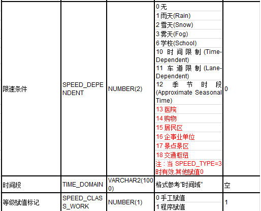
限制信息
行人导航
实时交通
区域属性
其他属性
基础属性
辅助标志

辅路
私道
提右
内容显示
道路形态
特殊交通
是否高架

铺设状态
普通限速
顺向限速
逆向限速
顺向限速来源
逆向限速来源
限速类型
普通限速
1 现场标牌
0 无
收费信息
内容显示
计费标准
元/公里
计费标识
区域标识
LINK长度
图幅号码
差分产品ID
12.34公里
595662
起点号码
4354
终点号码
6787
X
X
X
+
步行街
X
等级赋值标记
条件限速
+
顺向限速
逆向限速
顺限速来源
逆限速来源
限速类型
特定条件
内容显示
内容显示
限速条件
时间段
X
差分产品ID：赋值原则是否沿用二代？
① 组成部分：一共 2个部分组成：日期+高速本线。
② 字段长度：此字段一共10位，其中，日期占8位，高速本线占2位，如下图所示：
③ 高速本线定义：以下条件同时满足：（原则中多次用到高速本线都采用此定义）
1）种别为高速道路或城市高速；
2）单方向；
3）至少含有上下线分离、全封闭属性中的一个。
④ 赋值原则：点击此字段后，弹出下拉列表，列表中显示日期、高速本线 两个属性，每次点击属性栏中此字段后，程序会给每个属性赋值。用户选择单根link或者多根link，属性栏显示的界面都一样：
日期：允许编辑。如果差分产品 ID在编辑前无值，则程序自动赋当前日期；如果差分产品 ID在编辑前有值，则程序不处理，保留原值；
高速本线：允许编辑。如果差分产品 ID在编辑前无值，则程序自动赋00；如果差分产品 ID在编辑前有值，则程序不处理，保留原值；
⑤ 字段值清空功能：
点击“清空”按钮后，将 DIF_GROUPID”字段值清空，此功能对于单根link或者多根link都可以支持；
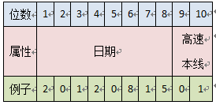
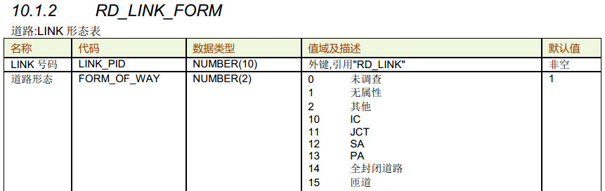
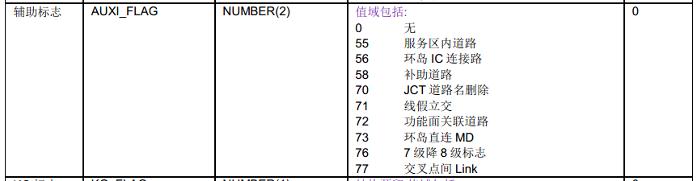
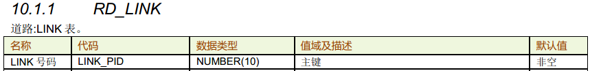
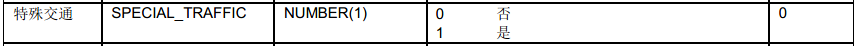
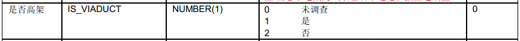
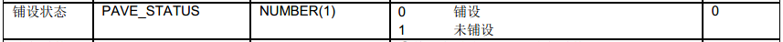
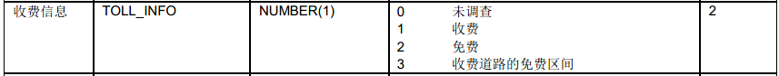
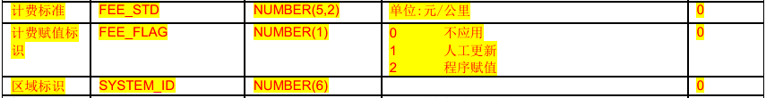
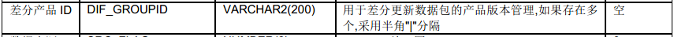
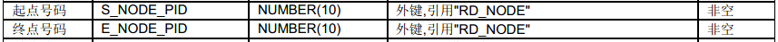


操作说明：
1.选中对象link
2.鼠标左键点击link属性栏的限速模块，选中link线限速属性栏展示，图面展示所有link非0限速值和限速方向（点限速和线限速），同时选中link的指定icon启动编辑状态。
3.给启动编辑的icon输入对应的限速值
4.空格确认完成线限速值的修改
5.点击其他功能按钮，可放弃当前编辑
6.按ESC可退出当前编辑
7.点击其他link属性模块，可退出当前编辑以及限速的图面展示
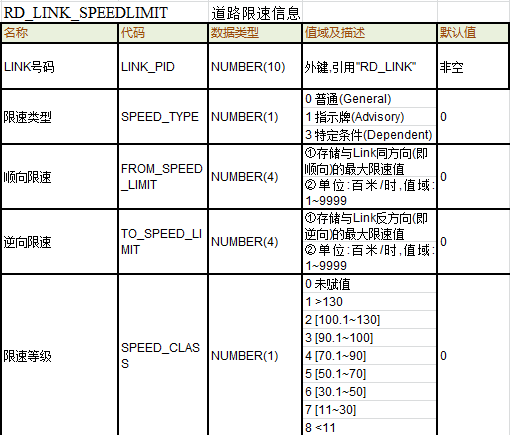
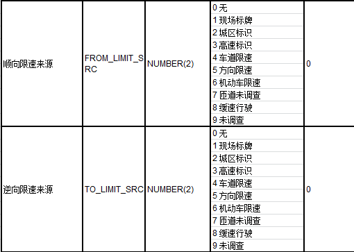

普通线限速查看编辑
实时控制：
1. 限速值字段输入的数值为半角数字,为总长度4位精确到0.1的浮点数或3位整数；
业务说明：
一.不同限速来源的线限速在图面上区分显示,不同的线限速值根据来源不同icon的颜色不同，具体如下：
1.现场标牌：红色圆圈+黑色限速值+红色箭头
2.城区标示：绿色圆圈+黑色限速值+绿色箭头
3.高速标示:黄色圆圈+黑色限速值+黄色箭头
4.车道限速:深蓝色圆圈+黑色限速值+深蓝色箭头
5.方向限速:浅粉色圆圈+黑色限速值+浅粉色箭头
6.机动车限速:浅蓝色圆圈+黑色限速值+浅蓝色箭头
7.匝道未调查:浅紫色圆圈+黑色限速值+浅紫色箭头
8.缓速行驶:黄绿色圆圈+黑色限速值+黄绿色箭头
9.未调查:紫色圆圈+黑色限速值+紫色色箭头
二.创建一根新道路link，程序默认增加一条普通限速信息，并且普通限速信息不允许增加和删除记录，有且仅有一条记录。同时，“限速类型”默认为“普通”，不允许编辑
三.顺向限速和逆向限速只显示不可编辑，单位为千米/小时
四.选中单根link，点击属性栏限速模块，选中link的线限速icon（限速值为0时，icon也显示）高亮显示，双方向道路两侧icon均显示，单方向道路在道路通行方向的右侧显示与道路方向同向的线限速icon.并且icon启动编辑状态。
五.当选中多根link时，link都为双方向，则以起始link到终止link的方向计算，选择的第一根link的右侧icon和最后一根link的左侧icon区别于该link串的其他icon高亮显示，处于编辑状态；如果选中的link都为单方向，则以起始link到终止link的方向计算，选择的第一根link的icon区别于该link串的其他icon高亮显示，处于编辑状态；当选中的link单双方向共存时，显示与单方向道路通行方向相同的icon，则以起始link到终止link的方向计算，第一根Link的icon高亮区别显示，启动编辑
六.选中多根link，属性栏中若有相同的字段值，则显示该字段值，若字段值不同则该字段值显示为空
七.图面上输入限速数值后，保存之后，限速属性栏中的对应方向的限速值、限速等级、限速来源（默认“现场标牌”）、速度等级赋值（默认“程序赋值”）自动更正
八.修改了限速值限速等级的维护原则：
实时控制：
1.限速值不为0时，限速来源不能为无；限速值为0时，限速来源应为“无”
2.限速类型为“普通”时，道路可通行方向上的速度限制不能为0，限速来源不能是“无”，否则报log：道路可通行方向上的速度限制不能为0，限速来源不能是“无”
0 无
1 现场标牌
2 城区标识
3 高速标识
4 车道限速
5 方向限速
6 机动车限速
7 匝道未调查
8 缓速行驶
9 未调查
限速来源
现场标牌

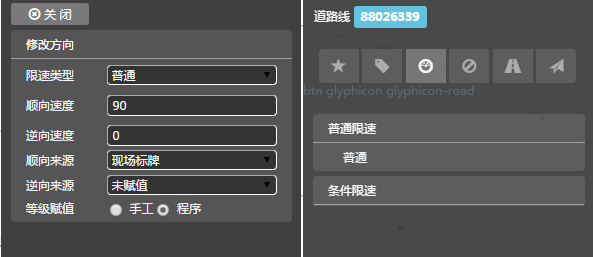
业务说明：
1.当选中link为双方向道路，属性栏中左右两侧限速来源（顺向和逆向限速来源）都允许编辑
2.当选中link为单方向时，道路方向为顺方向，则只允许编辑顺向限速来源；道路方向为逆方向，则只允许编辑逆向限速来源
3.允许批量（批量只适用于连续的link串，且这些link是首尾相接无分支的，画线方向一致）修改RDLink普通限速的“顺向限速来源、逆向限速来源”字段：
①当所选link的方向都为双方向时，“左右限速来源（顺向限速来源、逆向限速来源）”字段允许编辑；
②当所选link的方向都为顺方向时，只允许编辑“顺向限速来源”字段；
③当所选link的方向都为逆方向时，只允许编辑“右侧限速来源（逆向限速来源）”字段；
注：如果批量选中的link画线方向不一致，“顺向限速来源、逆向限速来源”字段不允许编辑；当所选link的方向都为未调查时，“顺向限速来源、逆向限速来源”字段不允许编辑。
4.修改了顺向限速值，则程序自动将顺向限速来源修改为1（现场标牌）；修改了逆向限速值，则程序自动将逆向限速来源修改为1（现场标牌）；注意：如果顺向限速或逆向限度修改为0，则限速来源维护为“无”。例如：如果顺向限速值为11，顺向限速来源为未调查，当将顺向限速值修改为0时，则顺向限速来源修改为“无”；
5.点击进入专题图显示场景，可专题显示link线限速的限速来源。
实时控制：
1.限速值不为0时，限速来源不能为无；限速值为0时，限速来源应为“无”
X
条件限速（共2条）
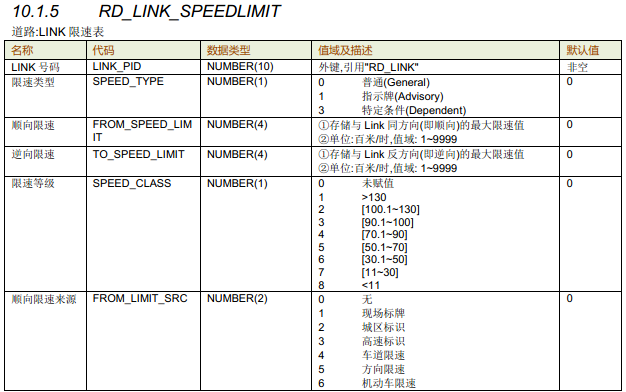
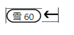
60
60
60
60
限速值编辑--常规场景
限速值编辑入--专题场景

操作说明：
1.鼠标左键点击限速专题场景按钮，图面展示所有link非0限速值和限速方向（点限速和线限速），
2.鼠标左键双击点限速icon（图1中蓝色框中的点限速50），程序自动按点限速的作用方向，以点限速的关联link为起始link追踪该点限速作用的link串，追踪到第一根有点限速关联的link处停止。（如右侧图1所示）
3.人工确认并修改作用link串的选取范围，确认无误，点击空格确认，选中的link串继承点限速的限速值和作用方向，（如右侧图2所示）
4.按ESC可退出当前编辑
5.再次点击线限速专题场景按钮，可退出普通限速专题场景
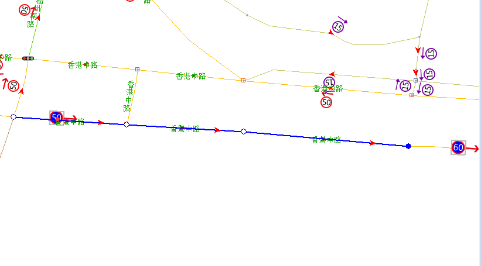
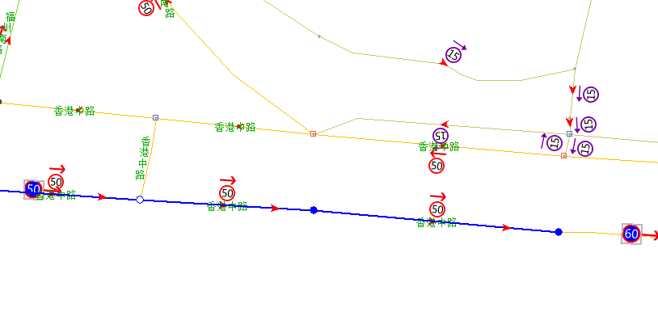
图1
图2

图4
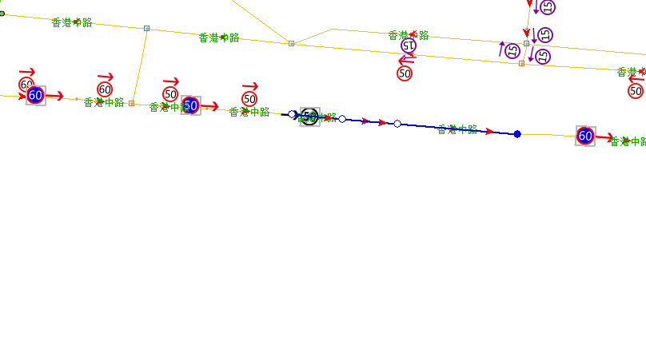
60


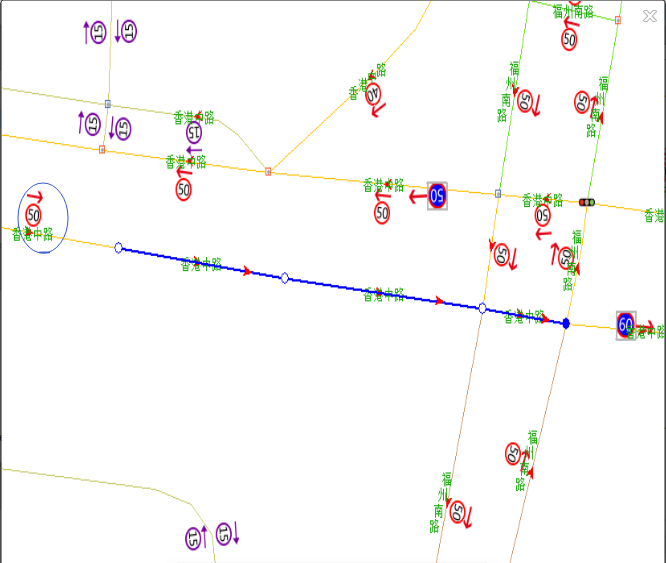

图3
图5
图6
限速来源查看编辑

操作说明：
1.选中对象link
2.鼠标左键点击link属性栏的限速模块，选中link线限速属性栏展示。
3.鼠标左键点击普通限速限速来源属性框，弹出可选择列表
4.高亮显示当前鼠标箭头所在的条目
5.鼠标左键点击需要选中的条目,选择列表收起，完成属性栏中值的修改
6.鼠标左键点击非选择列表区域，列表收起，退出编辑
7.按Esc键，列表收起，退出编辑
实时控制：
1. 限速值字段输入的数值为半角数字,为总长度4位精确到0.1的浮点数或3位整数；

限速等级查看编辑
操作说明：
1.选中对象link
2.鼠标左键点击link属性栏的限速模块，选中link线限速属性栏展示。
3.鼠标左键点击限速等级属性框，弹出可选择列表
4.高亮显示当前鼠标箭头所在的条目
5.鼠标左键点击需要选中的条目,选择列表收起，完成属性栏中值的修改
6.鼠标左键点击非选择列表区域，列表收起，退出编辑
7.按Esc键，列表收起，退出编辑
0 未赋值
1 >130
2 [100.1~130]
3 [90.1~100]
4 [70.1~90]
5 [50.1~70]
6 [30.1~50]
7 [11~30]
8 <11
限速等级
现场标牌
业务说明：
1.点击进入专题图显示场景，可专题显示link线限速的限速来源。

实时控制：
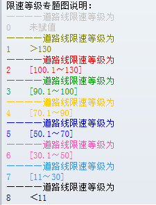
操作说明：
1.选中对象link
2.鼠标左键点击link属性栏的限速模块，选中link线限速属性栏展示。
3.鼠标左键点击限速等级赋值标识属性框，弹出可选择列表
4.高亮显示当前鼠标箭头所在的条目
5.鼠标左键点击需要选中的条目,选择列表收起，完成属性栏中值的修改
6.鼠标左键点击非选择列表区域，列表收起，退出编辑
7.按Esc键，列表收起，退出编辑

0 手工赋值
1 程序赋值
限速等级赋值标识
手工赋值

业务说明：
1.等级赋值标记：新增link的限速子表后，此字段默认为“1.程序赋值”，允许编辑，值域为2个：0.手工赋值、1.程序赋值；
1) 根据限速等级值维护等级赋值标记：
将“限速等级”值修改为非“0.未赋值”值，“等级赋值标记”值修改为0.手工赋值；将“限速等级”值修改为“0.未赋值”值，“等级赋值标记”值修改为：1.程序赋值；
2.点击进入专题图显示场景，可专题显示link线限速的限速来源。

实时控制：
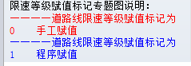
条件线限速查看编辑
操作说明：
1.点击条件线限速专题场景按钮，退出当前展示场景，进入条件限速专题场景，显示所有link的条件限速信息（线限速和点限速的值和方向），
2.鼠标左键双击条件点限速icon程序自动按点限速的作用方向，以点限速的关联link为起始link追踪该点限速作用的link串，追踪到第一根有点限速关联的link处停止。
3.人工确认并修改作用link串的选取范围，确认无误，点击空格确认，选中的link串继承点限速的限速值，限速方向，限速条件。生成一条条件限速信息。属性栏对应显示link的限速信息模块
4.按ESC可退出当前编辑
5.再次点击条件限速专题场景按钮，可退出条件限速专题场景
业务说明：
一.不同限速条件的线限速区分显示,不同的线限速值根据来源不同icon的颜色不同，具体如下：
1.雨天：
2.雪天：
3.雾天:
4.时间限制:
5.季节时段:
二： 如果选中多根link，不管每个link中有多少个条件限速，以“限速条件”为判断条件，属性栏只显示被选中的link中“限速条件”字段全部相同的那些记录和相同记录的数量，其余字段遵循批处理显示原则：如果多根link的属性值全部相同，则该字段显示其对应的值；如果多根link的属性值不同，则该字段显示为空；
三.点击条件点限速给对应link赋条件线限速，若对应link无条件限速信息，则默认生成一条条件线限速的记录，限速类型默认为“条件”，不允许编辑。若该link有多个条件线限速赋值，则累计增加相应的条件线限速信息。如果对应link已存在条件限速信息，则当赋值条件点限速与已存记录限速条件字段的值相同，则该条件点限速的信息替换该条记录的限速信息；如果与已存记录限速条件字段值不同，则增加一条限速信息记录。
四.顺向限速和逆向限速只显示不可编辑，单位为千米/小时
五..图面上输入限速数值后，限速属性栏中的对应方向的限速值、限速来源，自动更正
六.修改了顺向限速值，则程序自动将顺向限速来源修改为1（现场标牌）；修改了逆向限速值，则程序自动将逆向限速来源修改为1（现场标牌）；注意：如果顺向限速或逆向限度修改为0，则限速来源维护为“无”。例如：如果顺向限速值为11，顺向限速来源为未调查，当将顺向限速值修改为0时，则顺向限速来源修改为“无”；
七. 时间段：当限速条件为季节时段时，允许编辑模糊时间域，否则，不允许编辑模糊时间域；
八.顺向限速和逆向限速的值为半角数字,为总长度4位精确到0.1的浮点数或3位整数；
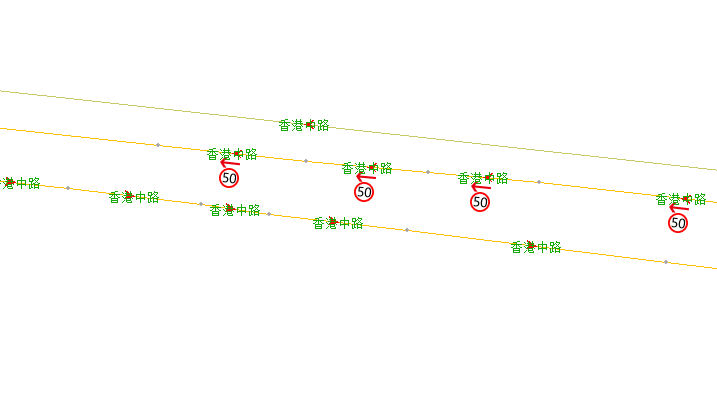

50
实时控制：
1.当限速条件为、时间限制、季节时段时，时间段必须有值；当时间段有值时，限速条件必须为时间限制、季节时段；
2.同一link同一种限速类型仅能存在一条（即限速类型、限速条件、不能完全重复）
可明确区分不同限速条件下的限速icon，同时体现限速值和限速方向
限速条件的类型有待确认，不适用值将不显示
条件线限速限速信息删除
操作说明：
1.点击属性栏中，对应条件限速信息的删除按钮、
2.空格确认，删除对应条件限速信息
时间段录入
操作说明：
1.点击属性栏时间段属性框，调用控件录入时间段
业务说明：
实时控制：
业务说明：
1.删除条件限速信息，系统默认减少一条记录
实时控制：
0 无
1 雨天(Rain)
2 雪天(Snow)
3 雾天(Fog)
6 学校(School)
10 时间限制(Time-Dependent)
11 车道限制(Lane-Dependent)
12 季节时段(Approximate Seasonal Time)
13 医院
14 购物
15 居民区
16 企事业单位
17 景点景区
18 交通枢纽
限速条件
雨天
限速条件
时间段
顺向限速
顺限速来源
逆向限速
逆限速来源
1.点限速入口：
操作说明：
1.点击限速专题场景按钮，退出当前展示场景，进入限速专题场景，显示所有link的普通限速信息（线限速和点限速的值和方向），再次点击专题场景按钮，可退出普通限速专题场景
2.鼠标左键双击顺延方向的最后一根link线限速的icon（赋值线限速link）（右侧图3中蓝色框中线限速50的icon），程序自动按照该线限速的作用方向，以作用方向的顺延link为起始link，追踪到第一根有点限速关联的link处停止。（如右侧图4所示）
3.人工确认并修改作用link串的选取范围，确认无误，点击空格确认，选中的link串继承该线限速的限速值和作用方向，
4.按ESC可退出当前编辑
5.再次点击线限速专题场景按钮，可退出普通限速专题场景
2.线限速icon入口：

操作说明：
1.选中对象link
2.鼠标左键点击link属性栏的限速模块，选中link线限速属性栏展示，图面展示所有link非0限速值和限速方向（点限速和线限速），同时选中link的指定icon启动编辑状态。
3.给启动编辑的icon输入对应的限速值
4.空格确认完成线限速值的修改
5.点击其他功能按钮，可放弃当前编辑
6.按ESC可回退至上一步动作
7.点击其他link属性模块，可退出当前编辑以及限速的图面展示

3.link入口：
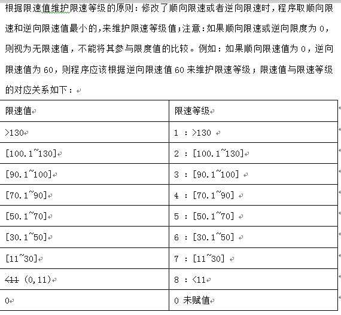
业务说明：
一.不同限速来源的线限速在图面上区分显示,不同的线限速值根据来源不同icon的颜色不同，具体如下：
1.现场标牌：红色圆圈+黑色限速值+红色箭头
2.城区标示：绿色圆圈+黑色限速值+绿色箭头
3.高速标示:黄色圆圈+黑色限速值+黄色箭头
4.车道限速:深蓝色圆圈+黑色限速值+深蓝色箭头
5.方向限速:浅粉色圆圈+黑色限速值+浅粉色箭头
6.机动车限速:浅蓝色圆圈+黑色限速值+浅蓝色箭头
7.匝道未调查:浅紫色圆圈+黑色限速值+浅紫色箭头
8.缓速行驶:黄绿色圆圈+黑色限速值+黄绿色箭头
9.未调查:紫色圆圈+黑色限速值+紫色色箭头
二.创建一根新道路link，程序默认增加一条普通限速信息，并且普通限速信息不允许增加和删除记录，有且仅有一条记录。同时，“限速类型”默认为“普通”，不允许编辑
三.顺向限速和逆向限速只显示不可编辑，单位为千米/小时
四.选中单根link，点击属性栏限速模块，选中link的线限速icon（限速值为0时，icon也显示）高亮显示，双方向道路两侧icon均显示，单方向道路在道路通行方向的右侧显示与道路方向同向的线限速icon.并且icon启动编辑状态。
五.当选中多根link时，link都为双方向，则以起始link到终止link的方向计算，选择的第一根link的右侧icon和最后一根link的左侧icon区别于该link串的其他icon高亮显示，处于编辑状态；如果选中的link都为单方向，则以起始link到终止link的方向计算，选择的第一根link的icon区别于该link串的其他icon高亮显示，处于编辑状态；当选中的link单双方向共存时，显示与单方向道路通行方向相同的icon，则以起始link到终止link的方向计算，第一根Link的icon高亮区别显示，启动编辑
六.选中多根link，属性栏中若有相同的字段值，则显示该字段值，若字段值不同则该字段值显示为空
七.图面上输入限速数值后，保存之后，限速属性栏中的对应方向的限速值、限速等级、限速来源（默认“现场标牌”）、速度等级赋值（默认“程序赋值”）自动更正
八.修改了限速值限速等级的维护原则：
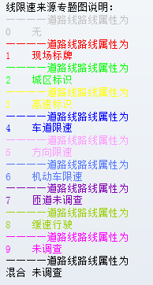
限速等级赋值标识查看编辑
限速值查看编辑--专题场景
普通限速
顺向限速
逆向限速
顺限速来源
逆限速来源
1 现场标牌
0 无
赋值标记
限速等级
5 [50.1~70]